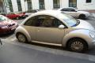

|
 | Tegnap a Bombagyár stábjából senki sem lazsált - kivételesen én sem. Gondoltam, ha már van
egy zsír fényképezőm, akkor miért ne veressem szét a fejem pár jó képért, így én is kimentem a
többiekkel együtt a városba.
A túrát ott kezdtük, ahol a félelemkeltő lufikat osztották volna
- őket azonnal előállították, estére azonban már szabadon voltak engedve (a lufikat és a héliumot is
visszakaptuk).
Itt már nem volt sok látnivaló, elmentünk a Szent István bazilika felé, ami
teljesen körbe volt véve. Ott sorakoztak a szemeteskocsik, locsolókocsik, a mélyentisztelt
sündőrség, valamint húsz tonna kordonvas és pár mentő. Később már a turistákat sem engedték ki a bazilikából, mert ugyebár. Ezután megnéztük az örökmécsest,
a Kossuth teret, a Vértanúk terét, valamint mindent, ami errefele akár egy kicsit is nagyobb volt,
mint egy átlagos utca vagy kereszteződés. Az eredmény mindenhol ugyanaz. Kordonok, behajtani
tilos táblák, és rengeteg marcona pék. Igen, az agorafóbia kellemetlen dolog.
Mivel minden
más teljesen le volt zárva, maradt a Deák tér, máshol nem is történt semmi.
Az írogatás
unalmas, képek alant, he.
Ez volt a legfontosabb dolguk - még el sem kezdődött
semmi, őket máris összepakolták.
Ezen gyárlakónknak feltett szándéka volt, hogy elvigyék a
pékek - gárdás polóban ment oda az első rakás közepére okosakat kérdezni
Itt még nem volt tiszta, hogy hol lesz a
rosszalkodásMienkittatérSzolidaritás!Kordon. A Káldy
utca felől meg lehetett kerülni őket.A Nemzeti Őrsereg is jelen volt, kis
létszámban
Akksiból mennyiség
Harminc ezüstpénzér'?
Kurvaanyád!
Ipiapacs, egykettőhárom, kiestél
Viszik
Őt is viszik
És őt is viszik
Biztos volt oka, hogy így vitték
Csak szakszerűen
Őt a biztonság kedvéért elverték
Őt valamiért visszahozták a térre - két oldalról
karonfogva, miközben törökült a levegőben
Kitalálták okosan, hogy kitolnak mindenkit
innen...
...idáig
Volt, aki azért inkább maradt
Gárdisták üléseznek
Fincsi volt, a következő adagot én kaptam
Valakik valamiért beféltek egyszer csak, és minden ok
nélkül futott mindenki 3 másodpercig elfele aztán vissza
Ez a punk kisfiú egy jó nagy magyar zászlóval mászkált
mindenfele. Igen, ilyen is van.
Ő is kapott egy jó adag gázt. Valakinek felemelték a
gázmaszkját, és alá fújták be.
Én pedig azt hittem...
Amikor idáig kitolták a tömeget, az jólnevelten elkezdett
széledni
| | vissza a főoldalra |  |
| 1 2 3 | |  | | | | | | | | | | | | | | | | | | | | 1 2 3 |  |
|


túraszervező
túra-rss
mi ez?

legjobbak
legolvasottabbak
tartalomjegyzék
rss feed

AboryM
Caesar
Count Grishnackh
cscsabi
eürdüngh
Feki
GyalogKakukk
Ishukone
Kadzseszka
LACI1993
Mini
Muska
Rommel
Segi
Takezó
tommylee
vikcee
|
BlogGép 1.1 (C) 2007-2009 tomcat
nem adom
hülye kérdések elott olvasd el a faq-t
minden, a bombagyar.hu-n és aloldalain közölt tartalom újraközléséhez
a szerkesztõk írásos beleegyezése szükséges
az olvasói kommentárok és levelek nem feltétlenül a szerkesztõk véleményét tükrözik
házirend elolvasása